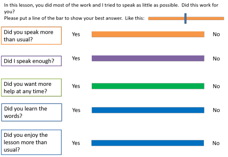
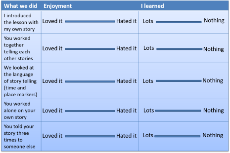

The Delta Professional Development Assignment, Part A
 |
|
| Reflection | and Action |
The Professional Development Assignment, Part A concerns Reflection
and Action but, before we can reflect and then act on our reflections,
we need some data to chew.
Where does this information come from?
Pause for a moment and think of some possible sources of information
about your teaching and then
click here when you have a short list.
Here's a picture of some possible inputs:

We can consider them one at a time.
- The diagnostic observation
- Because the diagnostic lesson looms large on most Delta courses, there is a section on this page (below) which considers how best to approach this. Here, it is enough to note that this should not be your only source of information, although you'd be foolish not to see it as an important one.
- Other observations
- These are observations you have done of others or that others have done of you. In some institutions, observations are frequent, whether peer-to-peer or undertaken by academic managers of one sort or another. In others, observation hardly happens at all or is half-hearted lip-service to the notion. Whichever is the case, you need to compare the outcomes of the diagnostic observation with what has been said about your teaching in the past. Look for commonalities.
- Your colleagues
- When we work with people, we often get a strong sense of
where their individual strengths and weaknesses lie. You
can probably list some for your colleagues. Now is the
time to ask yourself:
What would your colleagues write in the strengths and weaknesses columns about you? - Reading and research
- This may not be particularly scholarly or very seriously
done but any reading you have done or conferences / workshops you have
attended etc. will tell you something about your own teaching.
You may have thought, for example, when reading or being told
about something
That's an interesting idea, but ...
or
That's such obvious nonsense, because ...
Now is the time to revisit your thoughts and see if your responses betray certain assumptions you have consciously or unconsciously made concerning best practice. - Learners' responses
- Some learners can be quite sophisticated in their appraisal
of their teachers (indeed, some institutions actively canvass
their students' views about their teachers). Other
learners are less sophisticated, or less interested but all
learners react to what happens to them in one way or another.
Now is the time to gather your thoughts:
How would your learners respond if asked what your strengths and weaknesses are? - Your intuitions
- This is often a neglected area. Observers see small
slices of your teaching. You see it all. Sit down
now and write a list of your most obvious strengths and
weaknesses. When you have a list, prioritise it:
Which strengths and weaknesses have the most positive or negative effect on learning in your classroom?
You may have identified other sources which you consider important. That's fine, of course. You may also have dismissed some of the list above as not being available to you. That's OK, too.
Beliefs about teaching and learning |
Most good centres have some way of focusing you on articulating
and examining your underlying beliefs about teaching and learning.
Take the exercise seriously because the outcomes will inform the
whole of the Professional Development Assignment. If your
centre doesn't have such a procedure, and even if it does, try answering some of these
questions before you click on the
 to reveal some comments (there are no right answers but the right-hand
column contains suggestions of where to go for more information).
to reveal some comments (there are no right answers but the right-hand
column contains suggestions of where to go for more information).
| Assumption | Comment | Guides for more |
| Language learning is essentially
about mastering the structures, lexis and pronunciation of a
language. |
If you agreed with this statement, you are not alone. Many
learners would accept this and many teachers, too.
However, it is worth considering whether formal
knowledge transfers to the ability to use language for
real communication.
|
Communicative Language Teaching |
| Texts used for language input,
whether spoken or written, need to be carefully graded for
the learners’ level. |
If you agreed with this statement, are you denying your learners access
to and training in the use of authentic texts?
After all, the argument goes, no learner will ever
master the whole of a language and most will never get
above B2 level so they will all have to deal with
materials beyond their level in the real world and need
explicit training in how to do it.
|
authentic materials |
| Drilling new language is essential
if it is to be mastered. |
If you agreed with this, what evidence do you have
that drilling is effective at all? Do you believe
that language learning is essentially a process of
forming good habits?
|
drilling |
| theories of second-language acquisition | ||
| Motivation springs from confidence
in accurate language use. |
Is that all? It may be part of the story but
the area is complicated and much is debatable.
What other sources of motivation and commitment are there? |
motivation |
| Teacher talking time should always
be kept to a minimum. |
You need to ask whether it is the quantity of teacher talk that is
concerning you or its quality. The teacher's voice
and input is appreciated by many learners and is
sometimes underestimated in the effort to make lessons
more learner centred. It is a source of
comprehensible input tailored to the level and interests
of the class (or should be).
|
asking good questions |
| being clear | ||
| dealing with error | ||
| Learners learn best when they are
relaxed and calm. |
This is probably reference to Krashen's idea of the Affective Filter.
He asserted that relaxed, confident, calm learners learn
best but the hypothesis is not without its critics.
|
Krashen and the Natural Approach |
| The teacher’s personal relationship
with the learners is the most important factor in the
classroom. |
This is an important factor, of course, but whether it
is the most important may be debatable.
|
how learning happens |
| Learning has to be objectively
measured and formal testing is the best way to do that. |
In some settings, this is probably the case and it is true that many
learners expect some sort of testing procedure. When
they do, we need to make sure that any tests are fair
and acceptable to the learners who should believe it is
a real test. There are, however, other ways of
assessing learning that may be more appropriate in some
circumstances.
|
testing |
 |
Stage 1: The Diagnostic Lesson |
Each centre will vary in what it requires of you at this stage but there are some commonalities:
- The lesson is unassessed so, however successful, or otherwise, no records will be sent to Cambridge and it will not be taken into account when awarding the grade overall for Module Two. Relax; the outcomes are for you.
- You will be given some sort of feedback probably both oral and written
- Most centres will require you to write a proper plan
- Many centres require you to write a Reflection and Evaluation document after the lesson
- The feedback you receive from the observer must be included as an appendix to the PDA Part A
- The lesson is not assessed in any formal way and does not contribute at all to the final grade for the Professional Development Assignment
Before you set out on the diagnostic lesson, there are some things to ask yourself:
- Is this a lesson in which I can take on a number of different roles? It's good if it is, because your tutor can provide richer feedback.
- Am I happy that I have correctly analysed the language and or subskill which is / are the targets of the lesson? It's helpful if you do because your tutor wants to focus on your teaching behaviour and style, not only the content of what you are teaching.
- Have I thought about how I am going to give feedback to my learners on their production? Giving and getting feedback are very important parts of your teaching repertoire and you want to make sure you are doing this efficiently and helpfully. There's a guide to giving and getting feedback on this site.
- Have I included stages where I can check learning? See the guide to checking learning for more.
If you haven't already had some input from your centre concerning lesson planning, you should look at the guide to planning at Delta level.
 |
Stage 2: Reflection and action |
Don't base this part solely on the outcomes of the
diagnostic lesson. Your tutor watched only a small slice of your
teaching. You see it all. Look at the diagram at the
beginning and the notes below it to see what other data sources you
should consider.
Obviously, if the tutor has identified important areas to work on in the
diagnostic lesson, you should prioritise these but don't limit yourself
unnecessarily. Consider also:
- your preferred teaching style and beliefs about what is 'best practice'
- the culture of where you teach in terms of what the institution requires of teachers and learners
- how you adapt to certain teaching contexts and types of learners
- your knowledge (or lack of it) of methodology, techniques, lesson shapes and procedures and how confident you feel about implementing them
- any other training you have received
For this stage, you need to write between 800 and 1000 words.
That's not much so be concise and stay relevant. Using bullet
points usually saves words but don't do that at the expense of providing
some discussion. A simple list is not enough. Here's what
you do:
- Summarise your key teaching strengths and areas to work on.
Choose a maximum of five (preferably fewer but no fewer than three) or you won't have space and you won't stay
focused.
- Identify reasons for these strengths and areas to work on where possible
- Explain what the effects of your strengths and weaknesses are on learners and learning
- See if you can link what you do with your underlying beliefs and principles
- Identify the source of these strengths and weaknesses: training, knowledge, your personality etc.
- Say why development in these areas will be beneficial to you and your learners
- Produce an action plan for developing your teaching. Many
people find a table the best way to set this out. Consider:
- Action: what are you going to do?
This could be something like
Think more carefully and plan good concept-checking questions
or
Experiment with different ways to give feedback to my students
or
Consider more carefully the types and sources of error before I jump in to correct. - Objective: say why you are taking this action. How will it help? Look at it from your learners' point of view.
- Evaluate: say how you will find out whether
the action was helpful or not. This might include: getting
a colleague to observe, asking your students via a
questionnaire, getting a focus group of students together to
talk about what they thought, recording yourself, keeping a
teaching diary and so on.
Make sure this column or section doesn't simply include more action but is clear about how you will measure success. A famous dictum in management science is:
If you can't measure it, you can't improve it
Here's an example of how the first row of an action plan might look:Action Objective Evaluation - I will plan in detail what I will say when giving instructions and how I will check they are understood
- I will observe a colleague who is more experienced and focus on how he gives instructions
To make my instructions crisper and easier to understand and avoid the need for repair and repetition. This will: - save time and help my learners focus on tasks, activities and targets
- raise engagement and commitment levels
- I will audio-tape three lessons and then focus on whether I kept to my planned instructions and whether I checked and/or needed to repair them. I will look for improvement over the three lessons
- I will observe whether the learners are on track and on task and note on my plan whether there were times when instructions failed. I will look specifically to see what effect better instructions have on engagement
- I will ask a colleague to observe a lesson and focus particularly on whether she felt that my instructional language was effective and how engaged learners were from the outset of tasks
- Notice, in particular, that the third column focuses on how you will measure the outcomes of your actions.
- Action: what are you going to do?
This could be something like
- Include a bibliography and appendices for any materials used (e.g., a task for an observer to complete, questionnaire to be completed by learners) and don't forget to make the written feedback you received for the diagnostic lesson one appendix to the document.
How to gather good data and analyse itThis is often the part people find the most difficult to do,
so here's some help. |
In what follows, look through the procedures on the left, make up
your own mind what it's good for and whether there are
advantages and drawbacks and then click on the
 to reveal some comments.
to reveal some comments.
Remember: you are looking for techniques for data gathering that will
provide good, clean data for you to work on.
| Record your lesson(s) |
Helpful for almost everything but
especially for focusing on certain kinds of behaviour
like instruction giving and correction. |
| Get an observer to comment |
This can be helpful,
especially if you want to focus on particular, clearly
defined aspects of your teaching and can design a task
making the observer really focus on one or two aspects
only. |
| Get
students to comment |
This is very direct and can be informative, especially in terms of the effects of changes on learning and motivation, but:
If you are, e.g., focused on changes to feedback routines, groupings or materials and techniques, you can learn a lot from how the learners evaluate the changes in terms of enjoyment and commitment but may learn less about how effective the changes and innovations are. |
| Keep a
diary |
It's simple, low-tech and doesn't require anyone else's
cooperation. It can also be entirely private. It
tends to be quite subjective and impressionistic,
however.
|
| Discuss with colleagues |
The
setting up of a self-help teachers' group is usually the
most time-consuming bit of the procedure but once done,
groups sometimes develop their own momentum.
If you have concerns and issues in common with others, this is clearly a very helpful procedure but if you are more concerned with personal goals that others don't share, it is less effective. |
| Observe
others |
You are required to undertake 10 hours
of observation of other teachers on the Delta course.
Again, in busy environments, there may not be an easy way to arrange such observations but you may be surprised by how cooperative people can be. After all, it's actually rather flattering to be asked by a colleague to observe something he or she clearly thinks you do well and can be learned from. You need to have a very clear focus and know what you are looking for or you will just be a fly on the wall gathering impressions without any structure. There is a separate guide to observing teaching. |
| Make
notes on lesson plans |
This is easy and quick but your notes need to be
targeted rather than impressionistic. It assumes,
too, that you have a plan for every lesson (or at least
the ones where you are trying to develop new
approaches). It also requires a bit of discipline or it will get lost in the hurly-burly of day-to-day teaching. It is a very useful technique to focus on small changes and innovations. |
 |
Some examples |
There is some advice about how to write questionnaires and the sorts of item-types which are appropriate in the in-service training guide to conducting a needs analysis. That section is not written with the Delta mind but the considerations are the same and you can adapt the procedures to get the data you want.
Observer tasks
These work well whether used by an observer or by yourself when
reviewing a recording of some teaching.
You can, of course, write a questionnaire for an observer but
simple tasks like this often produce cleaner results.
Charts
This can be an effective way to focus your observer (or you, if you are reviewing a recorded lesson) on what you want to discover. Start with a blank chart and three coloured pens to play with while the lesson progresses. You can also use a set of blank circles and make pie charts if that's easier. Clearly, you can vary the parameters to suit what you want to be the focus.

Simple tasks

etc. for the following stages.
Interaction charts
Again, these can be filled in by an observer or by you when you review a recorded lesson. You need to limit them to short phases or they become unmanageable.

Questionnaires for learners
Again, simple, attractive questionnaires which are for simple responses are often better than requiring written answers from learners because the data is easy to interpret.

This is another way of getting feedback from learners, lesson stage
by stage.
Get them to put a cross on the line.
Warning: learners are poor at remembering what they did!

Apportioning time
| Make a pie chart of a lesson you taught and recorded in some
way. Something like this: |
Then make another setting out the
proportions of time you should have used. Like this: |
 |
Now re-teach the lesson (or a similar one) trying to keep a better balance.
 |
Stage 3: More reflection and action |
For this stage, you need to write between 650 and 750 words.
That's not much so bear the advice above in mind.
- Review your progress in the areas identified in Stage 2.
- Say what changes you have made
- Evaluate whether the actions in Stage 2 have been successful and whether / how your practice and / or underlying beliefs have changed. You may feel it is appropriate to refer to feedback from tutors on your LSAs here
- Discuss the effects of your action points on student learning
- Identify and comment on the most significant weaknesses in your practice
- Choose two or three areas to work on. These can be
extensions to the areas you chose to work on or new areas.
- Say why you chose these areas, identifying the current problem or issue
- Say why development in these areas will enhance your learners’ learning experiences
- Select and/or design methods and/or documents for gathering
data. These may be refinements of your earlier ones or new
ones. You may also have decided to remove some ideas because
they didn't work for some reason.
Again, consider Action, Objective and Evaluation. - Don't forget the bibliography and the materials.
|
|
Stage 4: Yet more reflection and action |
As before, you have only 650 – 750 words.
- This stage comes after you have completed all internal assignments, including the Experimental Practice.
- Identify and comment on any changes in your underlying beliefs and practices which have taken place during the course of the Professional Development Assignment. Note that this does not refer to the Delta course as a whole although what you say may be affected by what you have learned in other parts of the course and feedback from tutors on LSAs will be an important part of what you consider.
- Critically evaluate the approaches, techniques and materials
that you have used during the course to develop your own teaching.
- How effective have they been in achieving this development?
- How might they be adapted to make them more useful?
- How effective were your methods for the gauging success of innovations and changes to your practice?
- Say how you will continue to develop professionally in the future using some of the techniques etc. that you have worked on.
That's it. Nothing to it, really.
For a great deal more on how to carry out classroom research that will provide you with usable date, follow the guide (new tab).